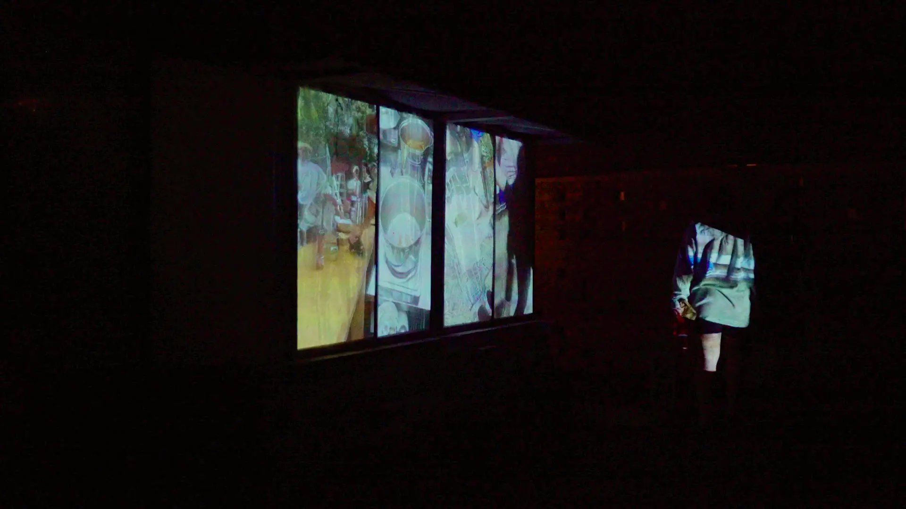
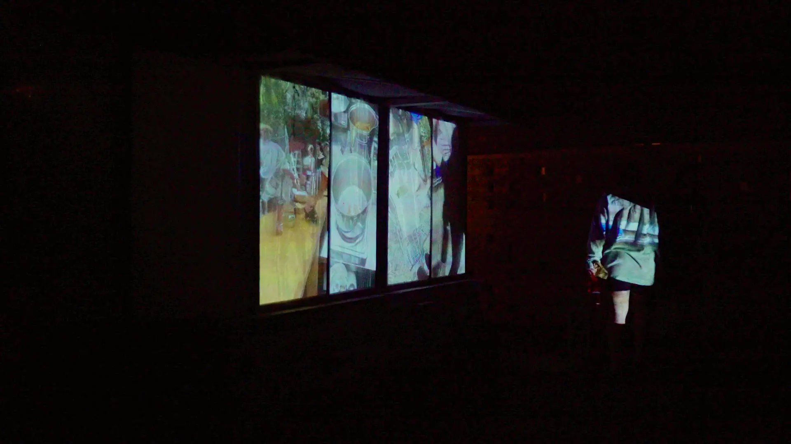

‘(Non-Institutional) Correspondence’ presents a series of posters created with 35 collaborators, marked by exchanges of learning and support.
The posters are accompanied by a section of the transcription from the time of collaboration.
The entire project leans into intuition, spontaneity, experimentation and informality.
The posters do not intend to efficiently state direct messages, they hint at knowledges, experiences and relations that are impossible to capture within conventional graphic design layouts.
There is an explorative approach to what would otherwise be a client-designer relationship. Poster content was created during a single collaboration session, to reduce labour on the part of the collaborator, and was informed by a variety of discussions and playful making.
The collaborators varied greatly in terms of previous creative experience—from exhibiting in renowned international institutions to self identified ‘non-creative people’. Previous experience, study and work are purposely not identified to decentre value attributed by institutions.
Created in collaboration with
Denise Tuitama-Robert,
Eddie Choo Wen Yi,
Majed Fayad,
Jacqueline Poon,
Tahlia Palmer,
Dorell Ben,
Shaun Naufahu,
Chris Payne,
Hannah Davis-Gray,
Leo Chircop,
Joy Zhou,
Dan Castelletti Selvaggi,
Jamali Bowden,
Ana Raquel Machava,
Giulia Coluccello,
Kaye Simonson,
Moira Tuitama-Roberts,
Xingyun Shen,
Emily Simek,
Kasper Quaink,
Dicky Takndare,
Peter Lemalu,
Lilah Benetti,
Lena Skipper,
Rebekah Stowers,
Alexander Tanazefti,
Ehab As’sadi,
Anthea Bonnici,
Jordaan Tuitama,
Ning Hong,
Cyrus Raitava Kumar,
Tamar Reisyan,
Jeftha Pattikawa,
Albert Refiti, and
Jacopo Lega.


 
